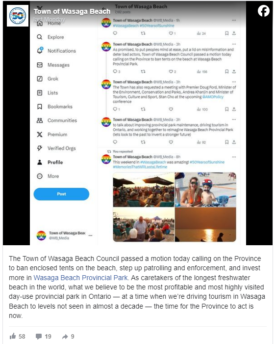

近日，社交媒体上流传的一段有人在安省著名的Wasaga Beach上排便的视频仍在进一步引发讨论。在当地小镇市长反驳并喊话要求省长介入之后，安省省长福特在周三的一个记者会上回应了这个问题。
上个月，一名TikTok用户在一段视频中声称，在Wasaga Beach省立公园排便多年来一直是一个持续存在的问题，随后该事件在网上引发热议。
上周一，该小镇市长Brian Smith表示，这已“严重损害”了Wasaga Beach的形象，并且没有证据支持这种说法。而且他也发出呼吁，希望省长福特来收拾残局。
据CP24报道，在周三密西沙加市一场记者会上的答记者问环节，福特回答了记者关于这次事件的提问。
福特表示，“对这个行为，还没有100%的证据。”
“不过，顺便提一下，我们已经给了Wasaga Beach市政府100万的资金来建公共洗手间，雇佣更多工作人员，” 福特接着说道。“如果能和市长亲自聊聊这件事，我也会很高兴。因为这是一个非常受欢迎的沙滩。”
“但是，现在还没有证据显示，人们会在沙滩上拉屎。”
对于会不会采取措施，禁止在沙滩上搭帐篷的问题，福特表示，如果要在省立公园“一刀切”地禁止搭帐篷，有点过了，且很难界定。
最后，福特说道，“各位，别在沙滩上拉屎，就这么简单。”
“不过话说回来，现在也还没有充分证据，只是在社交媒体上流传的信息。”
事件经过
发布视频的TikTok用户Natty Lynn在7月9日的视频中声称，Wasaga Beach省立公园多年来一直存在排便问题，人们正在搭建小帐篷并挖洞用作洗手间。在那段视频中，她说，她已经不让她的孩子在1号海滩挖沙子。
“市长不能否认我们所有人都有过这样的经历，” Lynn在上个月的一封电子邮件中表示，她要求使用她的社交媒体用户名。
“如果你浏览我的社交媒体评论，你会看到很多人说，这种事情几乎发生在安省、加拿大各地的每个海滩。这不是一个新问题。”

虽然安省的环境、保护和公园厅与安省公园管理部门一同负责Wasaga Beach省立公园，但该小镇官员表示，他们一直承受着投诉的冲击。
“很多社交媒体的关注和负面情绪……都被误导和误导到了Wasaga Beach小镇和居民身上，说这里的领导和人民什么也没做，” 该小镇市议员Richard White在周一的会议上说。
“管理这个省立公园是省政府的责任，我们今天站出来表示，我们需要更多的关注。”

在周一的会议上，市长Smith提出一项动议，希望与福特和几位厅长会面，并要求省府帮助制定省级规则，禁止在沙滩上搭帐篷，这与该省禁止在镇属沙滩土地上建造临时建筑的规则如出一辙。
Smith的动议还呼吁安省政府更好地投资Wasaga Beach省立公园，以改善垃圾收集和建筑物维修。他还希望有更多的省级公园管理员来执行规则和法规，并对违反这些规则的人处以更严厉的罚款。
<
p style=”text-align:justify;”>对此，你怎么看？